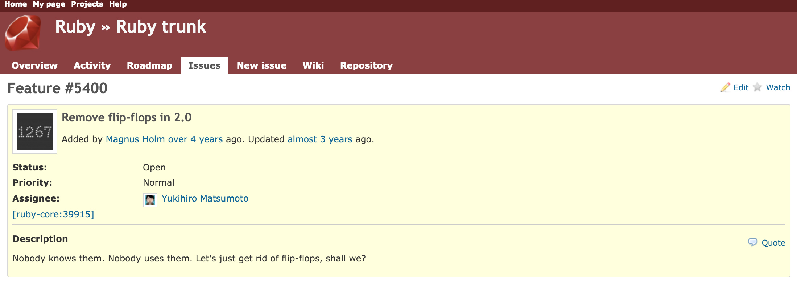
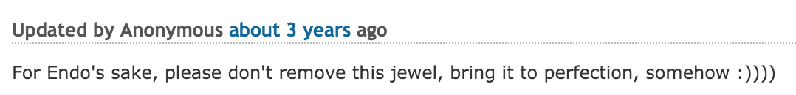
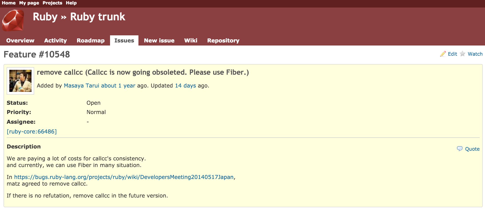
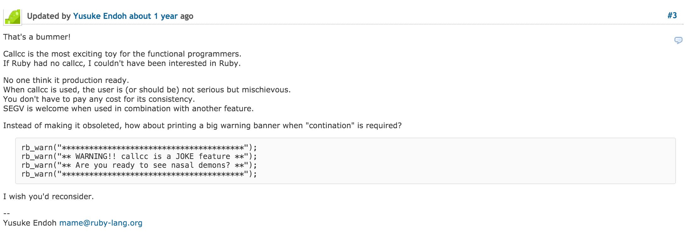

Странный руби

Языки, которые повлияли на руби
-
Perl
-
Lisp
-
Smalltalk
Matz про ruby
Ruby's class library is an object-oriented reorganization of Perl functionality plus some Smalltalk and Lisp stuff
Yukihiro Matsumoto
Flip-flop operator
(1..20).each do |x|
puts x if (x == 5) .. (x == 10)
endвывод:
5 6 7 8 9 10
Как это выглядит на языке Perl
while (<DATA>) {
if (/start/ .. /end/) {
print "flip flop true: $_";
}
else {
print "flip flop false: $_";
}
}
__DATA__
foo
bar
start
inside
blah
this is the end
bazТо же самое на языке Ruby
while DATA.gets
if /start/ .. /end/
print "flip flop true: #{$_}";
else
print "flip flop false: #{$_}";
end
end
__END__
foo
bar
start
inside
blah
this is the end
bazВ консольке
$ ruby -ne 'puts $_ if /start/ .. /end/' file.txt start inside blah this is the end
Есть тикет
...
Refinements
module Compaction
refine Hash
def compact
self.select { |_, value| !value.nil? }
end
end
endclass Dummy
using Compaction
{ a: true, b: false, c: nil}.compact # => { a: true, b: false}
end
{ a: true, b: false, c: nil}.compact # => NoMethodErrorRefinements
class Dummy
using Compaction
def action
{ a: true, b: false, c: nil}.compact
end
end
Dummy.new.action # => { a: true, b: false}Refinements
class Dummy
using Compaction
def action
{ a: true, b: false, c: nil}
end
end
Dummy.new.action.compact # => NoMethodErrorRefinements
class Dummy
using Compaction
end
class Dummy
{ a: true, b: false, c: nil}.compact # => NoMethodError
endRefinements
class Dummy
using Compaction
def action
yield
end
end
Dummy.new.action {
{ a: true, b: false, c: nil}.compact
} # => NoMethodErrorRefinements
- Lexical scope
- Появились в 2.0, но их можно было использовать на top-level'е
- Начиная с 2.1 можно писать `using` где угодно
Why is nobody using Refinements?
James Adam (@lazyatom)
Continuations
require "continuation"
arr = %w[Freddie Herbie Ron Max Ringo]
callcc { |cc| $cc = cc }
message = arr.shift
puts message
$cc.call unless message =~ /Max/вывод:
Freddie Herbie Ron Max
Пример
def map_tree(tree, &proc)
if tree.is_a? Array
tree.map { |node| map_tree(node, &proc) }
else
proc[tree]
end
endЗадача: найти общий префикс
def trees_prefix(tree_a, tree_b)
callcc do |return_cont|
fold_trees([],
make_iterator(tree_a),
make_iterator(tree_b)
) do |acc, leaf_a, leaf_b|
if leaf_a == leaf_b
acc << leaf_a
else
return_cont[acc]
end
end
end
endПараллельная поэлементая обработка
def fold_trees(acc, iterator_a, iterator_b, &proc)
leaf_a, next_iterator_a = next_step(iterator_a)
leaf_b, next_iterator_b = next_step(iterator_b)
if next_iterator_a && next_iterator_b
next_acc = proc[acc, leaf_a, leaf_b]
fold_trees(next_acc, next_iterator_a, next_iterator_b, &proc)
else
acc
end
endИмплементация
def make_iterator(tree)
-> flow {
map_tree(tree) { |leaf|
flow = callcc { |k| flow[leaf, k] }
}
flow[false, false]
}
endИмплементация
def next_step(iterator)
callcc { |k| iterator[k] }
endНачинная с 2.2 их задепрекейтили
irb(main):001:0> require 'continuation' continuation.bundle: warning: callcc is obsolete; use Fiber instead => true
Есть тикет
Юсуки не выдержал
Fibers
def make_iterator(tree)
Fiber.new do
map_tree(tree) { |leaf|
Fiber.yield leaf, Fiber.current
}
Fiber.yield(false, false)
end
endContinuations
def make_iterator(tree)
-> flow {
map_tree(tree) { |leaf|
flow = callcc { |k| flow[leaf, k] }
}
flow[false, false]
}
endFibers
def next_step(iterator)
iterator.resume
endContinuations
def next_step(iterator)
callcc { |k| iterator[k] }
endВыход из цикла без продолжений
def trees_prefix(tree_a, tree_b)
catch(:result) do
fold_trees([],
make_iterator(tree_a),
make_iterator(tree_b)
) do |acc, leaf_a, leaf_b|
if leaf_a == leaf_b
acc << leaf_a
else
throw :result, acc
end
end
end
endКонец
Twitter: @tank_bohr
http://tank-bohr.github.io/weird_ruby_talk/
Ссылки
- http://nithinbekal.com/posts/ruby-flip-flop/
- https://juliansimioni.com/blog/deconstructing-fizz-buzz-with-flip-flops-in-ruby/
- https://bugs.ruby-lang.org/issues/5400
- https://robm.me.uk/ruby/2013/11/20/ruby-enp.html
- https://robm.me.uk/ruby/2015/10/31/dollar-underscore.html
- http://interblah.net/why-is-nobody-using-refinements
- http://blog.headius.com/2012/11/refining-ruby.html
- http://www.atdot.net/~ko1/pub/ContinuationFest-ruby.pdf
- http://fprog.ru/lib/
- http://fprog.ru/2011/issue7/
- http://okmij.org/ftp/continuations/against-callcc.html
/